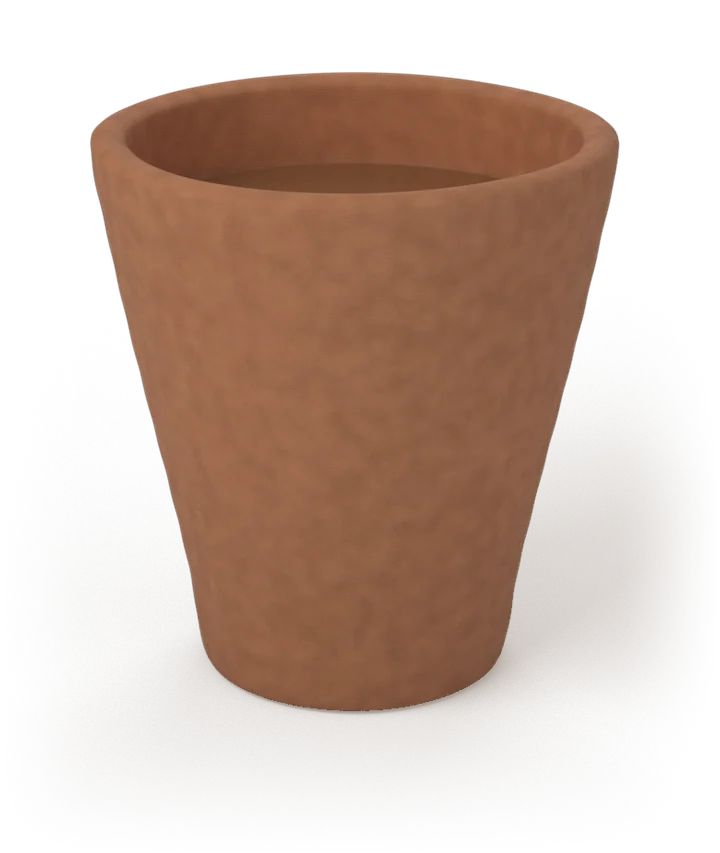
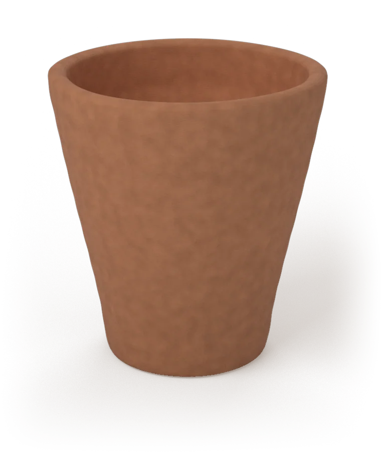
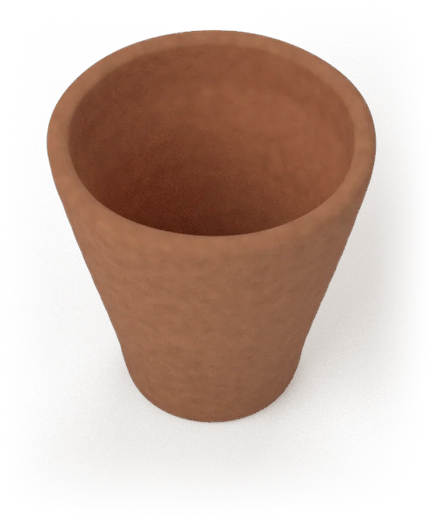
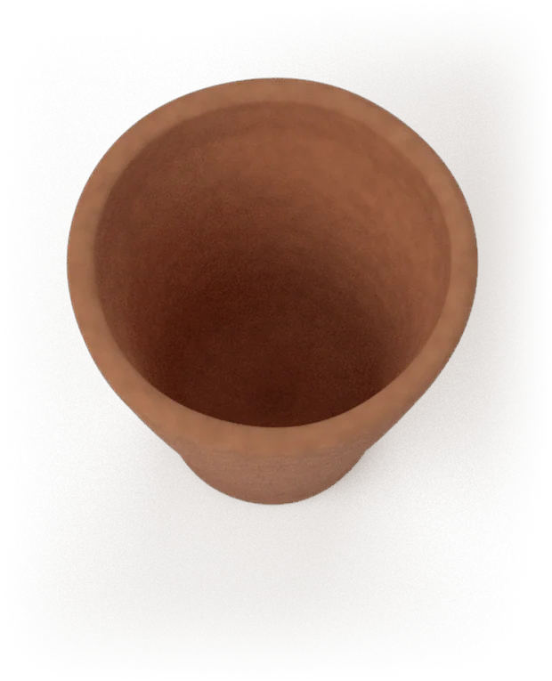
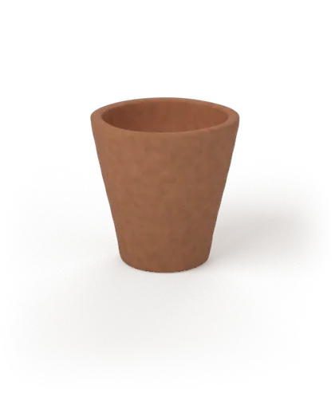
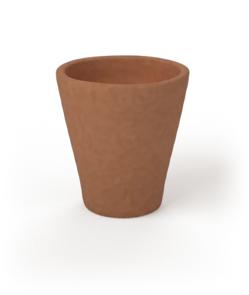
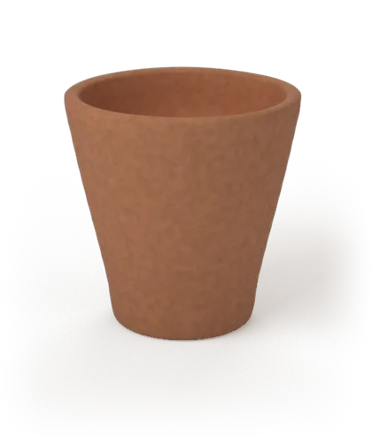
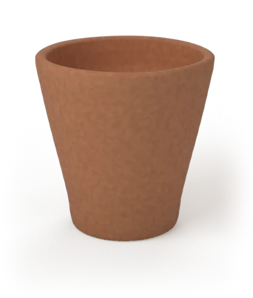

The smell of wet clay reaches you before the tea does.

Hand-thrown clay kullhads, made at the volume a café, tea stall or caterer actually needs — without losing what makes them worth drinking from.

A wall thrown thin at the rim and left thick at the base — the reason a kullhad takes heat without burning your fingers.
Every cup keeps the spiral left by the wheel. It's the fastest way to tell a thrown kullhad from a stamped one.
Unglazed, unpainted, unlined. Broken and buried, it's soil again in a matter of weeks — not a landfill problem for a century.
Kullhads (also spelled kulhad) have carried tea across India for generations — the wet-clay smell that reaches you before the first sip, and the fact that no two are ever quite the same shape.
Somewhere along the way cafés and stalls traded that for paper and plastic: cheaper, easier to get, disposable in every sense. In our early survey, 93% had used a kullhad before and would pick one again1 — the thing stopping them is that it simply isn't there when they want it.
Clayé is being built to close that gap: a kullhad plant that keeps the hand-thrown character and still turns up, on time, at the volumes a real business runs on.




Same body, same firing, same finish. Only the form changes with what's being poured into it.

Chai shots, tastings, sampling counters.

The classic tapri pour. Our highest-volume size.

Wider mouth, thicker wall — lassi, buttermilk, cold pours.

Weddings, caterers, and railway-scale service.
Local clay is dug, sieved and wedged to drive out air pockets — the same base material kumhar potters have worked with for centuries.
Smaller runs go on an electric wheel; high-volume orders through a press mould. Same wall, a fraction of the time.
Each piece air-dries before it ever sees heat, so it doesn't crack in the kiln. This step alone sets the timeline for a batch.
A controlled firing hardens the clay and locks in the aroma our survey respondents ranked as the number one reason they like kullhads.1
Sorted by size, crated and routed to cafés, stalls and caterers — built around standing orders, not one-off buys.
Early findings from our own market survey, next to the industry numbers behind the timing.
The short version of what people usually ask before their first order.
A kulhad (also spelled kullhad) is a small, handmade, unglazed clay cup used across India to serve chai, lassi and other drinks. It is fired once, used once, then broken and returned to the earth.
Both point to the same clay cup. "Kulhad" is the more common spelling in everyday search and speech (plural: kulhads), while "kullhad" is the spelling Clayé uses as a brand name. Either way, you're looking for the same hand-thrown terracotta cup.
Traditional kulhad cups are single-use and left unglazed on purpose, so the raw clay carries the tea's aroma into the drink. That is a big part of why people say chai tastes better from one. Once broken, an unglazed clay kulhad is fully biodegradable.
Yes. Clayé is built around supplying hand-thrown clay kulhad (kullhad) cups at the volume a café, tea stall, event caterer or distributor actually needs, not single-piece retail. Join the waitlist below for pricing and lead times.
Clayé makes four sizes from one clay body: a mini kulhad (30 to 50 ml) for chai shots and tastings, a chai kulhad (80 to 100 ml) for the classic tapri pour, a lassi kulhad (150 to 200 ml) for thicker pours, and an event kulhad (250 to 300 ml) for weddings and railway-scale service.
We're onboarding an early group of cafés, tea stalls and event caterers ahead of launch. Fill this in and we'll come back with pricing and lead times.
Thanks — we've got your details and will be in touch with pricing and lead times. Didn't go through? Email us directly at yashtyagi14314344@gmail.com.